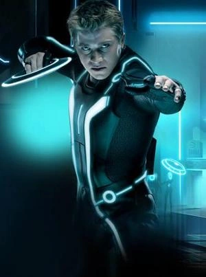
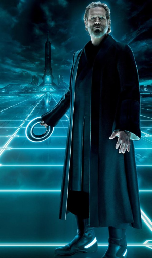
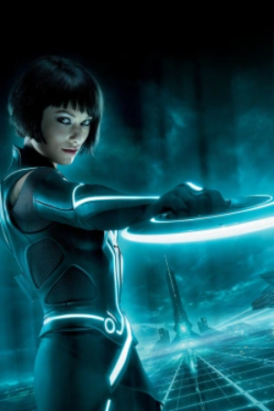
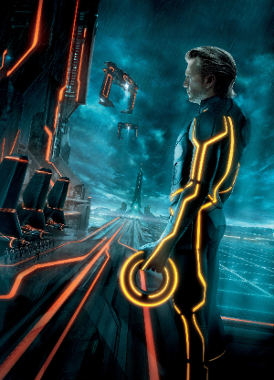
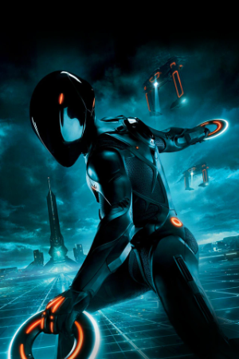

TRON: El legado
Sam Flynn (GARRETT HEDLUND), un experto en tecnología de 27 años e hijo de Kevin Flynn (JEFF BRIDGES),
investiga la desaparición de su padre y se encuentra metido en el mismo mundo de programas violentos y juegos de lucha donde su padre
y se encuentra metido en el mismo mundo de programas violentos y juegos de lucha donde su padre a estado viviendo los últimos 25 años.
Personajes

Sam Flynn
Interpretado por: Garrett Hedlund
Descripción: Sam es el hijo de Kevin Flynn, el protagonista de la película original. Es un joven rebelde y aventurero que ha crecido sin su padre, quien desapareció misteriosamente cuando Sam era niño. Sam es dueño mayoritario de ENCOM, la compañía tecnológica fundada por su padre, pero no se interesa en manejar la empresa. Al descubrir una señal proveniente del antiguo local de su padre, Sam es transportado a La Red, un mundo digital donde comienza su búsqueda para rescatar a Kevin y enfrentarse a Clu.

Kevin Flynn
Interpretado por: Jeff Bridges
Descripción: Kevin Flynn es un brillante programador y el creador del mundo digital de La Red. Después de los eventos de la primera película, Flynn desaparece, quedando atrapado en La Red por varias décadas. Dentro de La Red, Kevin ha envejecido y se ha convertido en una figura sabia y casi mítica. Clu, por otro lado, es un programa creado por Kevin con la misión de construir el mundo digital perfecto. Sin embargo, Clu se vuelve corrupto y dictatorial, traicionando a Kevin y tomando el control de La Red. Jeff Bridges interpreta ambos papeles, con tecnología digital utilizada para rejuvenecer su apariencia como Clu.

Quorra
Interpretada por: Olivia Wilde
Descripción: Quorra es un programa con habilidades excepcionales y una naturaleza curiosa y valiente. Es una de las pocas Isos (Seres Isomorfos), un tipo especial de programas que surgieron espontáneamente en La Red. Quorra ha sido protegida y entrenada por Kevin Flynn, y se convierte en la aliada y guía de Sam en su misión para rescatar a su padre y derrotar a Clu. Su carácter es una mezcla de inocencia y determinación, lo que la hace crucial para la narrativa.

Clu
Kevin Flynn / Clu interpretado por:Jeff Bridge
Descrpcion:Kevin Flynn es el genio informático que creó "La Red", un mundo digital dentro de un superordenador. Clu, un programa diseñado para crear un mundo perfecto, se rebela contra su creador y toma el control de La Red, convirtiéndose en un dictador obsesionado con la perfección.

Rinzler
Rinzler interpretado por :Anis Cheurfa y Bruce Boxleitner
Rinzler es un enforcer implacable de Clu en La Red. Anteriormente era conocido como Tron, el legendario programa de seguridad creado por Alan Bradley. Sin embargo, después de ser corrompido por Clu, Rinzler se convierte en una amenaza formidable para Sam y sus aliados.
Adelanto de la pelicula
CAJIGA VAZQUEZ HECTOR 2IM10